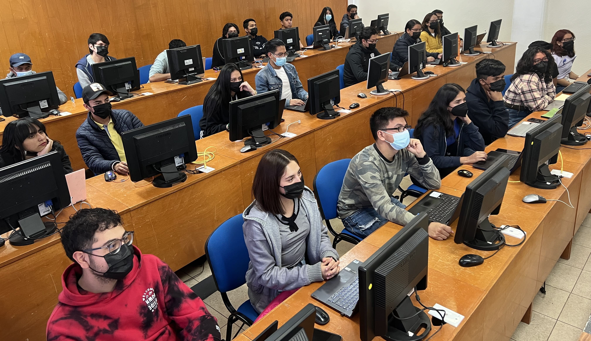

|  |
Una Línea de Investigación Educativa es una serie coherente de proyectos con actividades y estudios, con un conjunto de objetivos y metas de carácter académico, en temas disciplinares y multidisciplinares realizados por un grupo de profesores, investigadores y estudiantes, enfocados al desarrollo y mejora del proceso educativo del TecNM. |
Modelos educativos
|
Incluye temas relacionados con los fundamentos de la educación, el Modelo Educativo vigente, el enfoque de formación por competencias, el modelo dual, el modelo de educación a distancia, los modelos pedagógicos y, en general, aquellos temas orientados al estudio, análisis, mejora, desarrollo e innovación curricular |
Docencia y Aprendizaje |
Comprende proyectos, actividades y estudios sobre las prácticas, actitudes y comportamientos del profesor y de los estudiantes; la organización del curso, taller o laboratorio; las estrategias, métodos, técnicas y materiales didácticos, los resultados de aprendizaje y, en general, aquellas iniciativas encaminadas a enriquecer la práctica docente y el aprendizaje de los estudiantes y estudios de tutoría en sus diferentes modalidades. |
Evaluación e Indicadores
|
Abarca proyectos, actividades y estudios acerca de las teorías, fundamentos, objetivos, funciones y modelos de evaluación; estrategias, métodos y técnicas de evaluación; interpretación, uso de los resultados de la evaluación; tipos y ámbitos de la evaluación y, en general actividades de investigación educativa encaminadas al desarrollo (planeación, implementación y valoración) de indicadores de desempeño y a la creación de una cultura de evaluación en la práctica educativa. |
Tecnologías de la Información
|
Contiene proyectos, actividades y estudios relacionados con la integración de las TIC en el proceso educativo, beneficios y riesgos del uso de las TIC, modelos y modalidades de educación no escolarizada a distancia y mixta, y sistemas de administración del aprendizaje |
Gestión Académica |
Incluye proyectos y estudios en torno a teorías y modelos de gestión y desarrollo organizacional, modelos y estilos de liderazgo, planeación, dirección, organización y evaluación del proceso educativo; procesos estratégicos, tendencias administrativas y normas educativas de administración pública. |
Entorno del Proceso Educativo |
Incluye proyectos y estudios relacionados con las posibilidades de interacción y vinculación entre las instituciones de educación superior y los sectores económico, social y gubernamental, con particular atención a los grupos en situaciones vulnerables. |
|
A partir de la convocatoria que emite el TecNM y que se publicará en este sitio se solicita el registro de la línea de investigación de interés cumpliendo en tiempo y forma con lo requisitado y considerando lo siguiente: |
El expediente para el registro de una línea de investigación educativa debe estar integrado por: |
|
|
|
La solicitud de registro interno de la línea de investigación de interés se realiza en el momento en el que se cumpla en forma con lo requisitado y considerando lo siguiente: |
El expediente para el registro de una Línea de Investigación Educativa debe estar integrado por: |
|
|